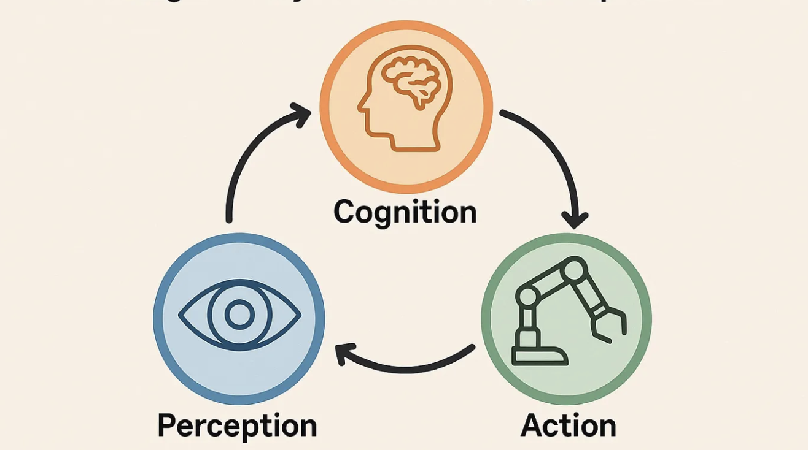
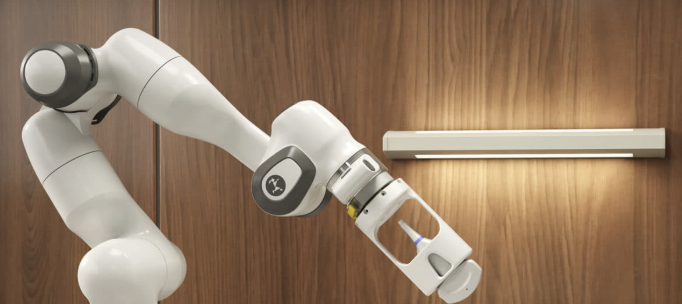
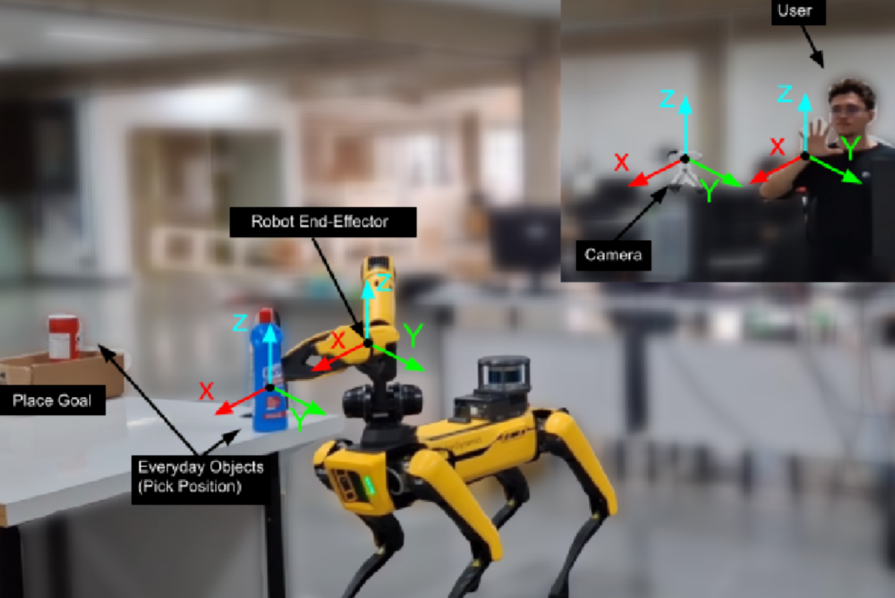
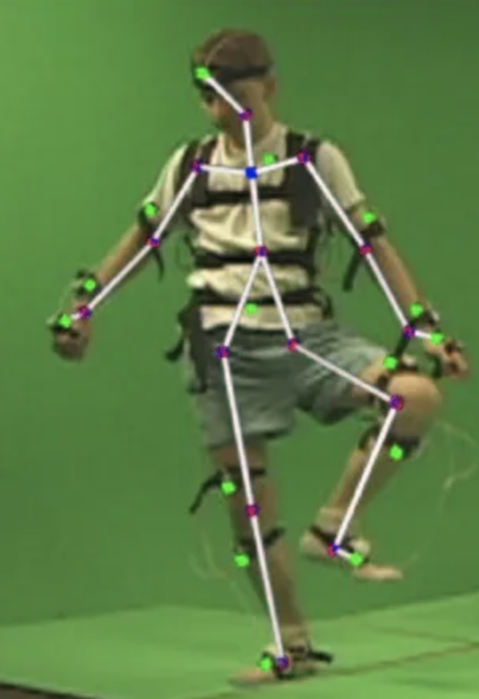
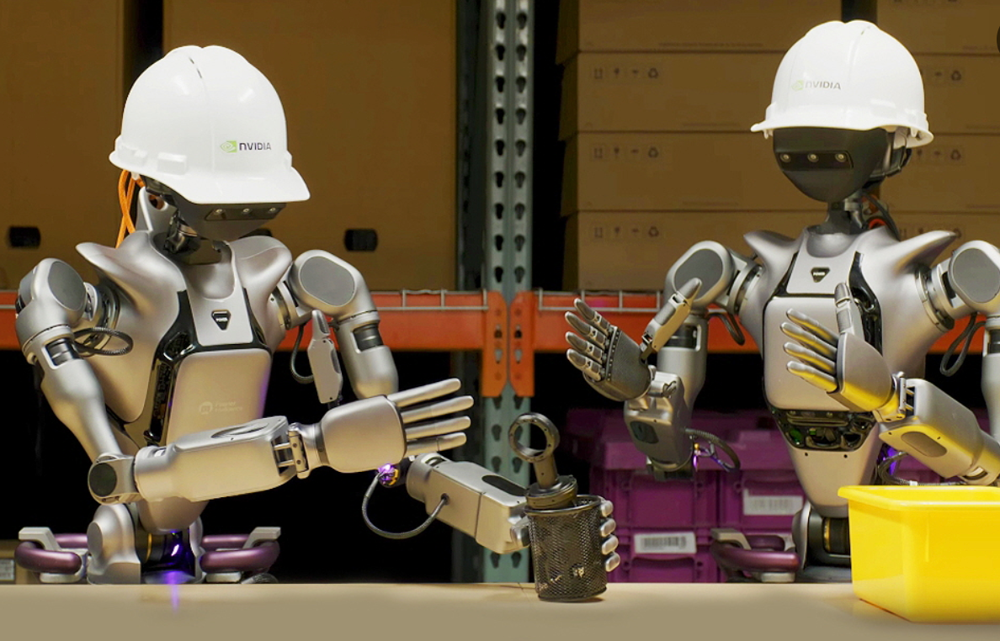

인식하고, 판단하고, 행동하는 AI
센서와 카메라가 현실 데이터를 수집하고, AI 모델이 상황을 판단한 뒤, 로봇 암이나 모터가 실제 움직임으로 결과를 만들어냅니다.
Physical AI Portfolio
데이터에서 행동으로
AI는 이제 단순히 데이터를 분석하는 단계를 넘어, 현실 세계를 인식하고 판단하며 로봇과 기계를 제어하는 단계로 발전하고 있습니다.
Core Concept
피지컬 AI는 단순히 데이터 분석에 그치는 것이 아니라, 물리적 환경에서 직접적인 개입과 조작이 가능한 인공지능입니다. 컴퓨터 비전, 머신러닝, 로봇 공학이 하나의 흐름으로 연결되어 현실 세계에 실제 행동을 만들어냅니다.

센서와 카메라가 현실 데이터를 수집하고, AI 모델이 상황을 판단한 뒤, 로봇 암이나 모터가 실제 움직임으로 결과를 만들어냅니다.
카메라와 센서를 통해 객체, 공간, 사람의 움직임을 인식합니다.
머신러닝 모델이 수집된 데이터를 바탕으로 최적의 행동을 판단합니다.
로봇 암과 모터를 제어하여 집기, 이동, 분류 같은 물리 작업을 수행합니다.
Technology Fusion
피지컬 AI는 화면 속 결과를 보여주는 기술이 아니라, 인식한 정보를 실제 하드웨어 제어까지 연결하는 기술입니다.

Current Status
피지컬 AI는 제조 자동화, 물류 분류, 품질 검사, 서비스 로봇 분야에서 빠르게 확산되고 있습니다. 특히 로봇 암 시스템은 카메라로 대상을 인식하고, 알고리즘으로 움직임을 계산한 뒤, 관절과 그리퍼를 제어해 실제 작업을 수행합니다.
Projects Portfolio
프로젝트 설명은 복잡한 형식보다, 피지컬 AI의 핵심인 인식·판단·행동 흐름이 드러나도록 구성했습니다.

카메라로 물체의 위치를 인식하고 로봇 암의 관절 각도를 계산해 대상물을 집고 이동하는 조작 시스템입니다.

사람의 팔과 몸의 움직임을 추적해 로봇 암이 유사한 동작을 수행하도록 설계한 모방 제어 프로젝트입니다.

물류 환경에서 물체를 인식하고 종류별로 자동 분류하는 피지컬 AI 기반 자동화 시스템입니다.
Interactive Simulator
시뮬레이터 화면 위에서 마우스를 움직이면 목표 지점이 변하고, 로봇 암이 해당 위치를 따라갑니다. 오른쪽 패널에서 X·Y·Z 좌표값이 실시간으로 바뀌는 것을 확인할 수 있습니다.
가로 이동은 X 좌표, 세로 이동은 Y 깊이와 Z 높이 변화로 변환됩니다. 캔버스에 포커스를 둔 뒤 방향키로도 조작할 수 있습니다.
End Effector : X 145 · Y 55 · Z 80
Future Vision
Q&A Board + Gmail
게시판과 이메일 문의를 분리했습니다. Q&A 게시판은 Firebase Realtime Database에 실시간으로 저장되고, 작성 시 입력한 비밀번호로 본인 글을 삭제할 수 있습니다. Gmail 문의는 작성 내용을 학교 이메일로 보낼 수 있도록 Gmail 작성창을 엽니다.
Realtime Q&A
질문과 의견을 남기면 아래 게시판 내역에 바로 표시됩니다. 삭제할 때는 글 작성 시 입력한 비밀번호가 필요합니다.
Gmail Contact
게시판과 별도로 문의 내용을 Gmail 작성창에 자동 입력합니다. 받는 메일은 jerryryu0902@dongyang.ac.kr입니다.
Board History
최근 등록된 Q&A를 실시간으로 확인할 수 있습니다.